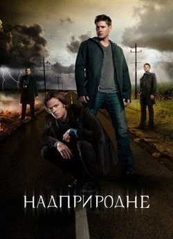

Головна
«Надприродне» (англ. Supernatural) — американський містичний серіал, який виходив з 2005 по 2020 рік і має 15 сезонів. У центрі сюжету — два брати, Сем і Дін Вінчестери, які подорожують США, полюючи на різну нечисть: демонів, привидів, вампірів, перевертнів та інші надприродні істоти. Серіал поєднує жахи, драму, гумор і родинні теми. З часом історія розширюється до боротьби з ангелами, пеклом, апокаліпсисом і навіть самим Богом. Основна емоційна вісь — стосунки між братами, їхні жертви одне заради одного та боротьба з власною долею. Серіал став культовим завдяки харизматичним головним героям, лінійці другорядних персонажів, фірмовій музиці класичного року й унікальному поєднанню містики з самоіронією.